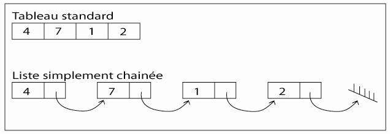
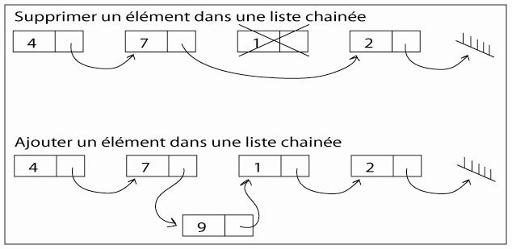
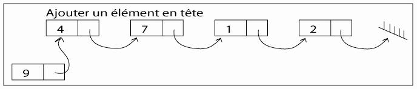
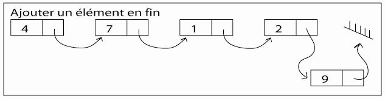

Euh, un tutoriel sur les listes chaînées ? C'est quoi ça ? Rassurez-vous : tout vous sera expliqué, depuis zéro.
A qui s'adresse ce tutoriel ?
Il s'adresse à toute personne ayant suivi les cours de M@teo jusqu'aux pointeurs. Ce tutoriel accompagné des exercices que je vous proposerai sont à mon avis un excellent entraînement, en ce qui concerne les pointeurs, entre autres, mais fera appel à toutes vos connaissances du langage C.
Et à la fin, que saurai-je faire ?
Le but de ce tutoriel est de vous initier aux listes chaînées, une autre façon d'implémenter un conteneur, la plus courante étant les tableaux. A la fin de ce cours, vous serez capables de coder votre propre bibliothèque permettant la création et la manipulation de listes simplement chaînées. Les listes doublement chainées seront introduites pour terminer afin que vous puissiez améliorer votre bibliothèque.
Je suis sûr que vous êtes prêts : nous allons donc commencer !
Lorsque vous créez un algorithme utilisant des conteneurs, il existe différentes manières de les implémenter, la façon la plus courante étant les tableaux, que vous connaissez tous. Lorsque vous créez un tableau, les éléments de celui-ci sont placés de façon contiguë en mémoire. Pour pouvoir le créer, il vous faut connaître sa taille. Si vous voulez supprimer un élément au milieu du tableau, il vous faut recopier les éléments temporairement, ré-allouer de la mémoire pour le tableau, puis le remplir à partir de l'élément supprimé. En bref, ce sont beaucoup de manipulations coûteuses en ressources. Une liste chaînée est différente dans le sens où les éléments de votre liste sont répartis dans la mémoire et reliés entre eux par des pointeurs. Vous pouvez ajouter et enlever des éléments d'une liste chaînée à n'importe quel endroit, à n'importe quel instant, sans devoir recréer la liste entière.
Nous allons essayer de voir ceci plus en détail sur ces schémas :

Vous avez sur ce schéma la représentation que l'on pourrait faire d'un tableau et d'une liste chaînée. Chacune de ces représentations possède ses avantages et inconvénients. C'est lors de l'écriture de votre programme que vous devez vous poser la question de savoir laquelle des deux méthodes est la plus intéressante.
Dans un tableau, la taille est connue, l'adresse du premier élément aussi. Lorsque vous déclarez un tableau, la variable contiendra l'adresse du premier élément de votre tableau. Comme le stockage est contigu, et la taille de chacun des éléments connue, il est possible d'atteindre directement la case i d'un tableau.
Pour déclarer un tableau, il faut connaître sa taille.
Pour supprimer ou ajouter un élément à un tableau, il faut créer un nouveau tableau et supprimer l'ancien. Ce n'est en général pas visible par l'utilisateur, mais c'est ce que realloc va souvent faire. L'adresse du premier élément d'un tableau peut changer après un realloc, ce qui est tout à fait logique puisque realloc n'aura pas forcement la possibilité de trouver en mémoire la place nécessaire et contiguë pour allouer votre nouveau tableau. realloc va donc chercher une place suffisante, recopier votre tableau, et supprimer l'ancien.
Dans une liste chaînée, la taille est inconnue au départ, la liste peut avoir autant d'éléments que votre mémoire le permet. Il est en revanche impossible d'accéder directement à l'élément i de la liste chainée. Pour ce faire, il vous faudra traverser les i-1 éléments précédents de la liste.
Pour déclarer une liste chaînée, il suffit de créer le pointeur qui va pointer sur le premier élément de votre liste chaînée, aucune taille n'est donc à spécifier.
Il est possible d'ajouter, de supprimer, d'intervertir des éléments d'une liste chaînée sans avoir à recréer la liste en entier, mais en manipulant simplement leurs pointeurs.
Chaque élément d'une liste chaînée est composé de deux parties :
la valeur que vous voulez stocker,
l'adresse de l'élément suivant, s'il existe. S'il n'y a plus d'élément suivant, alors l'adresse sera NULL, et désignera le bout de la chaîne.
Voilà deux schémas pour expliquer comment se passent l'ajout et la suppression d'un élément d'une liste chaînée. Remarquez le symbole en bout de chaîne qui signifie que l'adresse de l'élément suivant ne pointe sur rien, c'est-à-dire sur NULL.

Comme vous vous en doutez certainement maintenant, la liste chaînée est un type structuré. Nous en avons terminé avec ces quelques généralités, nous allons pouvoir passer à la définition d'une structure de données nous permettant de créer cette fameuse liste !
Vous vous demandez sûrement de quel type sera l'élément de la liste chaînée. A ceci je ne peux répondre que... à vous de voir. En effet, vous pouvez créer des listes chaînées de n'importe quel type d'éléments : entiers, caractères, structures, tableaux, voir même d'autres listes chaînées... Il vous est même possible de combiner plusieurs types dans une même liste. Allez : vous avez assez patienté, voici la déclaration d'une liste simplement chaînée d'entiers :
#include <stdlib.h>
typedef struct element element;
struct element
{
int val;
struct element *nxt;
};
typedef element* llist;
On crée le type element qui est une structure contenant un entier (val) et un pointeur sur élément (nxt), qui contiendra l'adresse de l'élément suivant. Ensuite, il nous faut créer le type llist (pour linked list = liste chaînée) qui est en fait un pointeur sur le type element. Lorsque nous allons déclarer la liste chaînée, nous devrons déclarer un pointeur sur element, l'initialiser à NULL, pour pouvoir ensuite allouer le premier élément. N'oubliez pas d'inclure stdlib.h afin de pouvoir utiliser la macro NULL. Comme vous allez le constater, nous avons juste crée le type llist afin de simplifier la déclaration.
Voilà comment déclarer une liste chaînée (vide pour l'instant) :
#include <stdlib.h>
typedef struct element element;
struct element
{
int val;
struct element *nxt;
};
typedef element* llist;
int main(int argc, char **argv)
{
/* Déclarons 3 listes chaînées de façons différentes mais équivalentes */
llist ma_liste1 = NULL;
element *ma_liste2 = NULL;
struct element *ma_liste3 = NULL;
return 0;
}
Maintenant que nous savons comment déclarer une liste chaînée, il serait intéressant d'apprendre à ajouter des éléments dans cette liste, ainsi que de lire ce qu'elle contient. C'est ce que nous allons étudier dans cette première partie sur la manipulation des listes chaînées. Je vous invite à essayer par vous-mêmes de programmer ces quelques fonctions basiques permettant de manipuler les listes. Dans tous les cas (ou presque), nous renverrons la nouvelle liste, c'est-à-dire un pointeur sur element contenant l'adresse du premier élément de la liste.
Ajouter un élément
Lorsque nous voulons ajouter un élément dans une liste chaînée, il faut savoir où l'insérer. Les deux ajouts génériques des listes chaînées sont les ajouts en tête, et les ajouts en fin de liste. Nous allons étudier ces deux moyens d'ajouter un élément à une liste.
Ajouter en tête
Lors d'un ajout en tête, nous allons créer un élément, lui assigner la valeur que l'on veut ajouter, puis pour terminer, raccorder cet élément à la liste passée en paramètre. Lors d'un ajout en tête, on devra donc assigner à nxt l'adresse du premier élément de la liste passé en paramètre. Visualisons tout ceci sur un schéma :

llist ajouterEnTete(llist liste, int valeur)
{
/* On crée un nouvel élément */
element* nouvelElement = malloc(sizeof(element));
/* On assigne la valeur au nouvel élément */
nouvelElement->val = valeur;
/* On assigne l'adresse de l'élément suivant au nouvel élément */
nouvelElement->nxt = liste;
/* On retourne la nouvelle liste, i.e. le pointeur sur le premier élément */
return nouvelElement;
}
C'est l'ajout le plus simple des deux. Il suffit de créer un nouvel élément puis de le relier au début de la liste originale. Si l'original est , (vide) c'est NULL qui sera assigne au champ nxt du nouvel element. La liste contiendra dans ce cas-là un seul élément.
Ajouter en fin de liste
Cette fois-ci, c'est un peu plus compliqué. Il nous faut tout d'abord créer un nouvel élément, lui assigner sa valeur, et mettre l'adresse de l'élément suivant à NULL. En effet,, comme cet élément va terminer la liste nous devons signaler qu'il n'y a plus d'élément suivant. Ensuite, il faut faire pointer le dernier élément de liste originale sur le nouvel élément que nous venons de créer. Pour ce faire, il faut créer un pointeur temporaire sur element qui va se déplacer d'élément en élément, et regarder si cet élément est le dernier de la liste. Un élément sera forcément le dernier de la liste si NULL est assigné à son champ nxt.

llist ajouterEnFin(llist liste, int valeur)
{
/* On crée un nouvel élément */
element* nouvelElement = malloc(sizeof(element));
/* On assigne la valeur au nouvel élément */
nouvelElement->val = valeur;
/* On ajoute en fin, donc aucun élément ne va suivre */
nouvelElement->nxt = NULL;
if(liste == NULL)
{
/* Si la liste est videé il suffit de renvoyer l'élément créé */
return nouvelElement;
}
else
{
/* Sinon, on parcourt la liste à l'aide d'un pointeur temporaire et on
indique que le dernier élément de la liste est relié au nouvel élément */
element* temp=liste;
while(temp->nxt != NULL)
{
temp = temp->nxt;
}
temp->nxt = nouvelElement;
return liste;
}
}
Comme vous pouvez le constater, nous nous déplaçons le long de la liste chaînée grâce au pointeur temp. Si l'élément pointé par temp n'est pas le dernier (temp->nxt != NULL), on avance d'un cran (temp = temp->nxt) en assignant à temp l'adresse de l'élément suivant. Une fois que l'on est au dernier élément, il ne reste plus qu'à le relier au nouvel élément.
Si vous pensez avoir bien saisi ces deux fonctions, je vous invite à passer à la partie suivante, dans laquelle je vais vous proposer quelques exercices. Le premier sera fondamental puisqu'il nous permettra d'afficher le contenu d'une liste chaînée.
Vous allez maintenant pouvoir vous tester. Votre mission, si vous l'acceptez, est de coder la fonction afficherListe. Vous devrez parcourir la liste jusqu'au bout et afficher toutes les valeurs qu'elle contient. Voici son prototype :
void afficherListe(llist liste);
Correction
void afficherListe(llist liste)
{
element *tmp = liste;
/* Tant que l'on n'est pas au bout de la liste */
while(tmp != NULL)
{
/* On affiche */
printf("%d ", tmp->val);
/* On avance d'une case */
tmp = tmp->nxt;
}
}
Alors ? Qu'est ce que ça donne ? Si vous avez réussi ce premier exercice, vous êtes sur la bonne voie. Quelques explications pour ceux qui ont eu quelques difficultés : la seule chose à faire est de se déplacer le long de la liste chaînée grâce au pointeur tmp. Si ce pointeur tmp pointe sur NULL, c'est que l'on a atteint le bout de la chaîne, sinon c'est que nous sommes sur un élément dont il faut afficher la valeur.
Exercice n°2
Un deuxième exercice utilisant trois fonctions que nous avons vues jusqu'à présent :
ajouterEnTete
ajouterEnFin
afficherListe
Vous devez écrire le main permettant de remplir et afficher la liste chaînée ci-dessous. Vous ne devrez utiliser qu'une seule boucle for.
10 9 8 7 6 5 4 3 2 1 1 2 3 4 5 6 7 8 9 10
Aucune autre directive pour cet exercice qui nécessite peut-être un peu de logique, mais question technique vous devriez être au point.
Correction
int main(int argc, char **argv)
{
llist ma_liste = NULL;
int i;
for(i=1;i<=10;i++)
{
ma_liste = ajouterEnTete(ma_liste, i);
ma_liste = ajouterEnFin(ma_liste, i);
}
afficherListe(ma_liste);
supprimerListe(ma_liste); // Libère les ressources, nous verrons cette fonction plus tard.
return 0;
}
Une simple boucle suffit. Au début, la liste est vide. Vous ajoutez un premier élément égal à 1, puis un deuxième 1. Après un premier passage, votre liste contient deux éléments 1. Au deuxième passage, nous allons ajouter un élément 2 en tête, puis un élément 2 en fin pour obtenir 2 1 1 2. Il suffit alors de répéter l'opération dix fois.
Exercice n°3
L'exercice suivant est le plus simple des trois, mais il me faut vous le montrer. Écrivez une fonction qui renvoie 1 si la liste est vide, et 0 si elle contient au moins un élément. Son prototype est le suivant :
int estVide(llist liste);
Vous vous demandez sûrement l'intérêt d'écrire une telle fonction... eh bien quand vous codez une bibliothèque, le mieux est de "masquer" le fonctionnement interne de vos codes. L'utilisateur n'est pas censé savoir qu'une liste vide sera égale à NULL, ni même que le type llist est un pointeur. Lui, il déclare une llist sans savoir comment elle est créée, puis l'utilise (ajoute ou supprime des éléments, trie sa liste, etc...) grâce aux fonctions de la bibliothèque. Dans certains cas, il lui faudra tester si la liste est vide, il utilisera par exemple :
if(estVide(ma_liste))
{
printf("La liste est vide");
}
else
{
afficherListe(ma_liste);
}
Alors ? Rien de plus simple, non ? Si la liste est NULL, il ne contient aucun élément, elle est donc vide. Sinon, c'est qu'elle contient au minimum un élément.
Nous voilà au bout de cette première série d'exercices. Dans la section suivante, nous allons voir plein de fonctions plus complexes permettant de manipuler nos listes chaînées !
Cette fois, ça va monter d'un cran niveau difficulté. Nous allons voir tout un tas de fonctions, pour supprimer des éléments, rechercher un élément... Je vous conseille si vous n'avez pas tout compris de revenir un peu en arrière, de faire des essais avec votre compilateur préféré, parce que tout ce que nous allons voir fonctionne toujours sur le même principe. Je considèrerais ce que j'ai précédemment montré comme acquis. Cette partie va se dérouler comme ceci : j'explique l'algorithme général de la fonction puis je donne son code commenté.
Prêts ? On y va !
Supprimer un élément en tête
Il s'agit là de supprimer le premier élément de la liste. Pour ce faire, il nous faudra utiliser la fonction free que vous connaissez certainement. Si la liste n'est pas vide, on stocke l'adresse du premier élément de la liste après suppression (i.e. l'adresse du 2ème élément de la liste originale), on supprime le premier élément, et on renvoie la nouvelle liste. Attention quand même à ne pas libérer le premier élément avant d'avoir stocké l'adresse du second, sans quoi il sera impossible de la récupérer.
llist supprimerElementEnTete(llist liste)
{
if(liste != NULL)
{
/* Si la liste est non vide, on se prépare à renvoyer l'adresse de
l'élément en 2ème position */
element* aRenvoyer = liste->nxt;
/* On libère le premier élément */
free(liste);
/* On retourne le nouveau début de la liste */
return aRenvoyer;
}
else
{
return NULL;
}
}
Supprimer un élément en fin de liste
Cette fois-ci, il va falloir parcourir la liste jusqu'à son dernier élément, indiquer que l'avant-dernier élément va devenir le dernier de la liste et libérer le dernier élément pour enfin retourner le pointeur sur le premier élément de la liste d'origine.
llist supprimerElementEnFin(llist liste)
{
/* Si la liste est vide, on retourne NULL */
if(liste == NULL)
return NULL;
/* Si la liste contient un seul élément */
if(liste->nxt == NULL)
{
/* On le libère et on retourne NULL (la liste est maintenant vide) */
free(liste);
return NULL;
}
/* Si la liste contient au moins deux éléments */
element* tmp = liste;
element* ptmp = liste;
/* Tant qu'on n'est pas au dernier élément */
while(tmp->nxt != NULL)
{
/* ptmp stock l'adresse de tmp */
ptmp = tmp;
/* On déplace tmp (mais ptmp garde l'ancienne valeur de tmp */
tmp = tmp->nxt;
}
/* A la sortie de la boucle, tmp pointe sur le dernier élément, et ptmp sur
l'avant-dernier. On indique que l'avant-dernier devient la fin de la liste
et on supprime le dernier élément */
ptmp->nxt = NULL;
free(tmp);
return liste;
}
Rechercher un élément dans une liste
Le but du jeu cette fois est de renvoyer l'adresse du premier élément trouvé ayant une certaine valeur. Si aucun élément n'est trouvé, on renverra NULL. L'intérêt est de pouvoir, une fois le premier élément trouvé, chercher la prochaine occurrence en recherchant à partir de elementTrouve->nxt. On parcourt donc la liste jusqu'au bout, et dès qu'on trouve un élément qui correspond à ce que l'on recherche, on renvoie son adresse.
llist rechercherElement(llist liste, int valeur)
{
element *tmp=liste;
/* Tant que l'on n'est pas au bout de la liste */
while(tmp != NULL)
{
if(tmp->val == valeur)
{
/* Si l'élément a la valeur recherchée, on renvoie son adresse */
return tmp;
}
tmp = tmp->nxt;
}
return NULL;
}
Compter le nombre d'occurrences d'une valeur
Pour ce faire, nous allons utiliser la fonction précédente permettant de rechercher un élément. On cherche une première occurrence : si on la trouve, alors on continue la recherche à partir de l'élément suivant, et ce tant qu'il reste des occurrences de la valeur recherchée. Il est aussi possible d'écrire cette fonction sans utiliser la précédente bien entendu, en parcourant l'ensemble de la liste avec un compteur que l'on incrémente à chaque fois que l'on passe sur un élément ayant la valeur recherchée. Cette fonction n'est pas beaucoup plus compliquée, mais il est intéressant d'un point de vue algorithmique de réutiliser des fonctions pour simplifier nos codes.
int nombreOccurences(llist liste, int valeur)
{
int i = 0;
/* Si la liste est vide, on renvoie 0 */
if(liste == NULL)
return 0;
/* Sinon, tant qu'il y a encore un élément ayant la val = valeur */
while((liste = rechercherElement(liste, valeur)) != NULL)
{
/* On incrémente */
liste = liste->nxt;
i++;
}
/* Et on retourne le nombre d'occurrences */
return i;
}
Recherche du i-ème élément
Pour le coup, c'est une fonction relativement simple. Il suffit de se déplacer i fois à l'aide du pointeur tmp le long de la liste chaînée et de renvoyer l'élément à l'indice i. Si la liste contient moins de i élément(s), alors nous renverrons NULL.
llist element_i(llist liste, int indice)
{
int i;
/* On se déplace de i cases, tant que c'est possible */
for(i=0; i<indice && liste != NULL; i++)
{
liste = liste->nxt;
}
/* Si l'élément est NULL, c'est que la liste contient moins de i éléments */
if(liste == NULL)
{
return NULL;
}
else
{
/* Sinon on renvoie l'adresse de l'élément i */
return liste;
}
}
Récupérer la valeur d'un élément
C'est une fonction du même style que la fonction estVide. Elle sert à "masquer" le fonctionnement interne à l'utilisateur. Il suffit simplement de renvoyer à l'utilisateur la valeur d'un élément. Il faudra renvoyer un code d'erreur entier si l'élément n'existe pas (la liste est vide), c'est donc à vous de définir une macro selon l'utilisation que vous voulez faire des listes chaînées. Dans ce code, je considère qu'on ne travaille qu'avec des nombres entiers positifs, on renverra donc -1 pour une erreur. Vous pouvez mettre ici n'importe quelle valeur que vous êtes sûrs de ne pas utiliser dans votre liste. Une autre solution consiste à renvoyer un pointeur sur int au lieu d'un int, vous laissant donc la possibilité de renvoyer NULL.
C'est un algorithme vraiment simple. Vous parcourez la liste de bout en bout et incrémentez d'un pour chaque nouvel élément que vous trouvez. Cet algorithme n'ayant aucun intérêt au point où nous en sommes, je vais en profiter pour vous faire découvrir un nouveau type d'algorithme. Jusqu'à maintenant, nous n'avons utilisé que des algorithmes itératifs qui consistent à boucler tant que l'on n'est pas au bout. Nous allons voir qu'il existe des algorithmes que l'on appellent récursifs et qui consistent en fait à demander à une fonction de s'appeler elle-même. Attention : il faudrait un big-tuto complet pour tout expliquer à propos des algorithmes récursifs, ce n'est vraiment que pour vous montrer que ce genre de choses existe que je vais les utiliser dans les deux prochains codes.
Avant tout, je pense qu'un petit point d'explication s'impose. Pour créer un algorithme récursif, il faut connaître la condition d'arrêt (ou condition de sortie) et la condition de récurrence. Il faut en fait vous imaginer que votre fonction a fait son office pour les n-1 éléments suivants, et qu'il ne reste plus qu'à traiter le dernier élément. Lisez le code suivant. N'ayez pas peur si ceci vous semble obscur, ce n'est pas essentiel pour utiliser les listes chaînées. Maintenant, je suis sûr que vous êtes au point et vous pouvez donc de manière itérative créer à peu près tout ce qui peut se faire.
int nombreElements(llist liste)
{
/* Si la liste est vide, il y a 0 élément */
if(liste == NULL)
return 0;
/* Sinon, il y a un élément (celui que l'on est en train de traiter)
plus le nombre d'éléments contenus dans le reste de la liste */
return nombreElements(liste->nxt)+1;
}
Effacer tous les éléments ayant une certaine valeur
Pour cette dernière fonction, nous allons encore une fois utiliser un algorithme récursif. Même si la récursivité vous semble être une notion complexe (et ça l'est sûrement), elle simplifie grandement les algorithmes dans certains cas, et dans celui-ci tout particulièrement. Je vous donne le code à titre indicatif, vous pourrez vous même recoder cette fonction avec un algorithme itératif si vous le voulez.
llist supprimerElement(llist liste, int valeur)
{
/* Liste vide, il n'y a plus rien à supprimer */
if(liste == NULL)
return NULL;
/* Si l'élément en cours de traitement doit être supprimé */
if(liste->val == valeur)
{
/* On le supprime en prenant soin de mémoriser
l'adresse de l'élément suivant */
element* tmp = liste->nxt;
free(liste);
/* L'élément ayant été supprimé, la liste commencera à l'élément suivant
pointant sur une liste qui ne contient plus aucun élément ayant la valeur recherchée */
tmp = supprimerElement(tmp, valeur);
return tmp;
}
else
{
/* Si l'élement en cours de traitement ne doit pas être supprimé,
alors la liste finale commencera par cet élément et suivra une liste ne contenant
plus d'élément ayant la valeur recherchée */
liste->nxt = supprimerElement(liste->nxt, valeur);
return liste;
}
}
Voilà... Maintenant, vous êtes des as en matière de liste chaînées, j'en suis sûr. Je vous propose donc quelques exercices. Le premier sera de coder de manière itérative la fonction nombreElements dont je vous rappelle le prototype :
int nombreElements(llist liste);
C'est un exercice qui ne devrait pas vous poser de problèmes : bonne chance.
int nombreElements(llist liste)
{
int nb = 0;
element* tmp = liste;
/* On parcours la liste */
while(tmp != NULL)
{
/* On incrémente */
nb++;
tmp = tmp->nxt;
}
/* On retourne le nombre d'éléments parcourus */
return nb;
}
C'est aussi simple que ça. On parcourt simplement la liste tant que l'on n'est pas arrivé au bout, et on incrémente le compteur nb que l'on renvoie pour finir.
Exercice n°2
Nous allons maintenant écrire une fonction permettant d'effacer complètement une liste chaînée de la mémoire. Je vous propose d'écrire avec un algorithme itératif dans un premier temps, puis une seconde fois grâce à un algorithme récursif. Dans le premier cas, vous devez parcourir la liste, stocker l'élément suivant, effacer l'élément courant et avancer d'une case. A la fin la liste est vide, nous retournerons NULL.
llist effacerListe(llist liste)
{
element* tmp = liste;
element* tmpnxt;
/* Tant que l'on n'est pas au bout de la liste */
while(tmp != NULL)
{
/* On stocke l'élément suivant pour pouvoir ensuite avancer */
tmpnxt = tmp->nxt;
/* On efface l'élément courant */
free(tmp);
/* On avance d'une case */
tmp = tmpnxt;
}
/* La liste est vide : on retourne NULL */
return NULL;
}
llist effacerListe(llist liste)
{
if(liste == NULL)
{
/* Si la liste est vide, il n'y a rien à effacer, on retourne
une liste vide i.e. NULL */
return NULL;
}
else
{
/* Sinon, on efface le premier élément et on retourne le reste de la
liste effacée */
element *tmp;
tmp = liste->nxt;
free(liste);
return effacerListe(tmp);
}
}
Et voilà : vous en savez maintenant un peu plus sur ce que sont les listes chaînées. Vous pourrez améliorer ceci en utilisant les listes doublement chaînées, qui sont en fait une liste d'éléments qui pointent à la fois sur l'élément suivant, mais aussi sur l'élément précédent, ce qui vous permet de revenir en arrière plus facilement qu'avec les listes simplement chaînées. Vous pouvez compléter votre bibliothèque avec des fonctions de tri, de recherche de minimum, de maximum et bien d'autre choses...
Passons maintenant à un petit QCM, afin de vérifier que vous avez tout saisi !
Eh bien il semblerait que vous êtes au point. Comme vous avez pu le constater, le choix d'utiliser ou non les listes chaînées est fait lors de l'implémentation de votre algorithme dans un langage. Vous devrez toujours faire des compromis.
J'avais parlé d'introduire les listes doublement chaînées, ce que je vais faire maintenant pour vous permettre d'aller plus loin. L'idée est la suivante : un élément ne va plus se composer d'une valeur et d'une adresse, mais d'une valeur et de deux adresses : l'adresse de l'élément suivant mais aussi l'adresse de l'élément précédent. On pourra tirer avantage de cette spécificité pour lire des listes à l'envers. Avoir l'adresse de l'élément précédent peut simplifier les algorithmes de vos fonctions, mais tout aussi bien les compliquer car c'est maintenant deux pointeurs qu'il faut gérer lors d'un ajout ou d'une suppression.
Nous sommes loin d'avoir codé une bibliothèque complète, mais vos connaissances vous permettent maintenant de continuer seuls et d'implémenter toutes sortes de fonctions.
Merci d'avoir lu ce tutoriel jusqu'au bout. Si une ou plusieurs erreurs s'y sont glissées (ce n'est pas exclu), prévenez-moi par MP.
Je sais que le sujet des listes chainées est souvent abordé lors de l'entrée dans les études supérieures, aussi je serais ravis d'apprendre qu'un professeur vous a redirigé sur mon tutoriel, si tel est le cas n'hésitez pas à me le faire savoir par message !